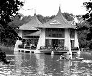
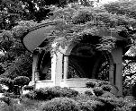

呂清夫 撰文

「市區公園為的是給都市生活帶來安慰與休息，在四季苦熱、身心較易疲勞的亞熱帶地區，特別需要公園。因之，公園要有充分的面積，栽植花草樹木，配置池亭，設立博物館、圖書館、音樂廳、紀念物及銅像之類，使園內幽邃閒雅，並具遊樂設施，不但應使民眾平時能夠自由地獲致休息與慰藉，並得有助於精神的涵養，目前（台灣）全島的市區公園有二十二個，總面積已達三萬三千二百二十八公畝。」這是一九四○年「台灣事情」一書的記載，其中還提到本省的第一所公園是台北圓山公園（一號公園），建於一八九七年，緊接於日本據台的第三年，亦即東京設立中央公園（日比谷公園）之後的第八年。圓山公園內有筆塚、寺廟、動物園、遊樂區，附近並有石器時代的遺跡蹟與貝塚，過去曾被挖掘出不少石斧、石槍、骨器、土器。只是時至今日我們已不覺得它是一個普通的公園了。台北新公園設立於一九○八年，它是相對於圓山公園（舊公園）而被稱為新公園。從一九二一年的一張照片看來，它似乎有點像凡爾賽，整個公園是歐風的，在幾何形態的布局之下，林中隱約可見大型的噴泉、歐式的涼亭、規則的小徑，並在一片蒼翠之中，凸出那座白色的博物館。當時園內尚有天滿宮、協和會館、幼兒園及台北唯一的台灣總督像（白色大理石全身像），在台北當時總共持有的十三座雕像中，這是唯一一座由本省人發起建造的，發起人是辜顯榮等四人，發起的緣由是所謂「本島人為永誌其盛德而向義大利訂做的……。」（見一九四○年「台北市政二十年史」）本省的第二座公園是基隆高砂公園，建於一九○○年，但是今天已經滄海桑田，片甲不留。高砂公園遺址當在今天的忠四路以南至鐵道邊，光復不久，這一帶還被稱為「公園頂」。據「基隆誌」（一九三四年，漢文）的記載，高砂公園「自基隆驛（車站），步行約五分，便得達到該園，然園之地形係一小丘，並由砂岩構成之。內有青松綠草，奇花異卉，蒼鬱情景，殊堪娛目。」登丘遠望，港市風景，盡在眼底，綠樹之下，清泉洵洵，小亭盆池，自添景趣，園內尚設網球場及棒球場，公園東邊又設有收容貧民的博愛館。可惜而今景物已非，佈滿了水泥叢林。至於今天尚存的中正公園則是基隆的「新公園」，俗稱石阪公園，「大基隆」（一九三五年）一書說它是田石阪莊作的奉獻努力所完成，從基隆神社後山一直綿亙無線山（位於田寮港西北）附近，道路縱橫，登山下山，無不稱便，任何地點，均可俯瞰基隆市街，並可遠眺野柳、基隆島、八尺門一帶，有長橋、有涼亭……。」入口的陡峭石階建得很有氣派，但很簡素，遊客上了階梯，似乎精神便為之一振，頗有助於前述「精神的涵養」，不過今天已經改建得毫無風格了。
至於本省的第三座公園則是台中公園，建於一九○三年，「台灣情勢」一書上說：「面積二萬四千五百坪，樹木蒼鬱濃綠，草坪、花圃、小丘的配置，加上池中的休憩所（現名中正亭）等，風景如畫，為全省屈指可數的名園。」當時園中尚有小型的猴園與鳥園，同時園內的每一棵樹幾乎都有來歷，有的是由鄉民集體奉獻，有的是由許多名人手植，均有紀錄可考。但是台中公園最引人注目的應是那個人工湖及其休憩所，不過公園深處的小丘也頗有意思，我猜這個小丘是挖人工湖之後的泥土堆起來的，小丘上那個歐風的「望月亭」實在非常雅致（見左圖），設計應係出自名匠之手。亭邊更有茂密的鳳凰木，把白色的亭子襯得更為風雅。另外，當時的台中公園即保留有一八八九牛建造的更樓及北門樓（中式望風亭），正如基隆中正公園當初亦保留了過去的砲台，益增這塊土地的歷史淵源及人文關懷。只是這些古老的公園到了今天，常出現一些十分對比的畫面，例如台中公園的歐風「望月亭」旁遏，便赫然樹立著「抗日忠勇將士民眾紀念碑」，只是紀念碑本身很新、很單調（立方柱而已），紀念碑的基座則很舊、很考究，形成有趣的對比，顯然是在日據時代的舊瓶上裝了新酒。更對比的是紀念碑旁邊突然又冒出一支大大的「依必朗」廣告牌，實在很不調和。離歐式望月亭不遠，還有一個對比的畫面，那就是孔子像，此像樹立在一個佔地不小的高台上，高台正面有兩匹大銅馬，一對小石獅，高台四邊圍有石柵，孔子像就豎立在高台正中，但是在整個製作上來看，孔子像做得最小、最租糙、最黯淡，全景若拍成照片，那麼幾乎找不到孔子。這使我想到台灣有些銅像，往往台座比銅像還來得精緻，也來得古老，銅像本身幾乎徒具形式而已，因為它們都是粗糙的新酒。對比的畫面也出現於台北新公園，如新建的四個中國式涼亭，占地不小，花花綠綠，實與白色的博物館構成了刺眼的對比。基隆中正公園近年也是大興土木，什麼主普壇、大佛像、忠烈祠，乃至市長公館……應有盡有，中西日三者合璧，令人看了眼花撩亂，國人似乎對空地很難過，非要蓋上建築物不可，而且有著大頭病，規模總要遠東第一，品味則是粗糙無比，距離「幽邃閒雅」的境界是越來越遠了。原載1991.1.8.自立早報，收入1994呂清夫著「現代都市叢林派」